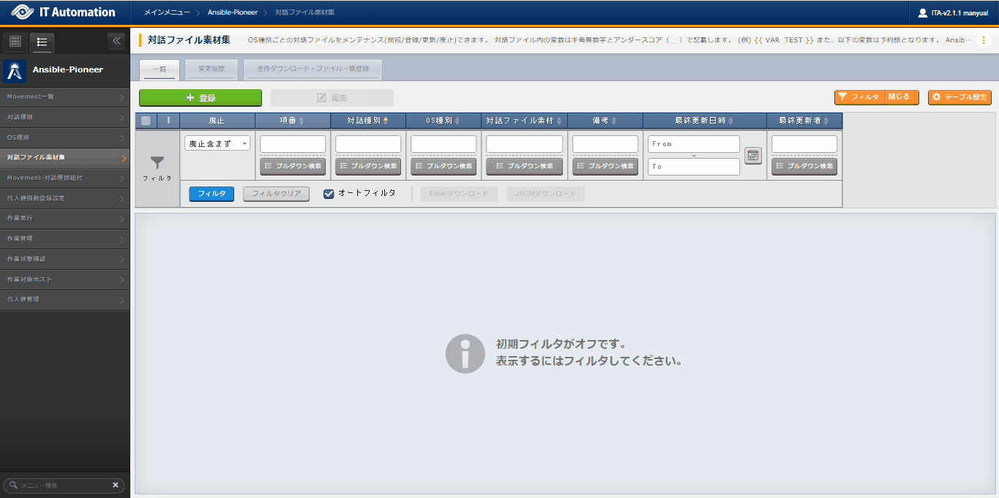
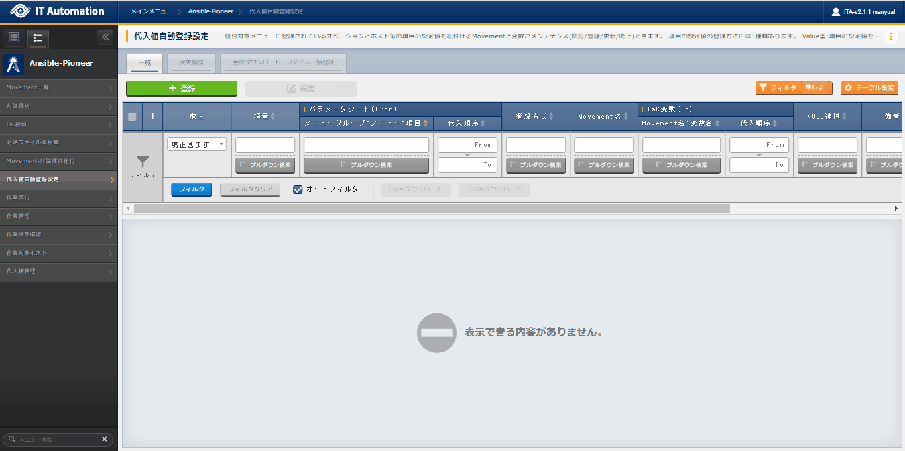

3. Ansible-Pioneer¶
3.1. はじめに¶
3.2. Ansible-Pioneer概要¶
3.3. Ansible-Pioneer メニュー構成¶
3.3.1. メニュー/画面一覧¶
- 基本コンソールのメニュー
No |
メニュー画面 |
説明 |
|---|---|---|
1 |
オペレーション一覧 |
オペレーション一覧をメンテナンス(閲覧/登録/更新/廃止)できます。 |
- Ansible共通のメニュー
No |
メニュー・画面 |
説明 |
|---|---|---|
1 |
機器一覧 |
作業対象の機器情報を管理します。 |
2 |
インターフェース情報 |
Ansible Core、Ansible Automation Controllerサーバのどちらを実行エンジンとし構築作業をするか選択をします。
実行エンジンのサーバへの接続インターフェース情報を管理します。
|
3 |
Ansible Automation Controllerホスト一覧 |
Ansible Automation ControllerのRestAPI実行に必要な情報、および構築資材をAnsible Automation Controllerにファイル転送するために必要な情報を管理します。 |
4 |
グローバル変数管理 |
各モードのPlaybookや対話ファイルで共通利用する変数と具体値を管理します。 |
5 |
ファイル管理 |
各モードのPlaybookや対話ファイルで共通利用する素材ファイルと埋込変数を管理します。 |
6 |
テンプレート管理 |
各モードのPlaybookや対話ファイルで共通利用するテンプレートファイルと埋込変数を管理します。 |
7 |
管理対象外変数リスト |
「 変数抜出対象資材 」で抜出した変数で、 の に表示したくない変数を管理します。 |
8 |
共通変数利用リスト (※1) |
・ ・ に登録されている変数が、どの素材( ・ ・ )で使用しているかを閲覧できます。 |
Tip
- Ansible-Pioneerのメニュー
No |
メニュー・画面 |
説明 |
|---|---|---|
1 |
Movement一覧 |
Movementの一覧を管理します。 |
2 |
対話種別 |
同一目的の対話ファイルをまとめる対話種別を管理します。 |
3 |
OS種別 |
Pioneerより作業対象となる機器のOS種別を管理します。 |
4 |
対話ファイル素材集 |
対話種別に紐づけるOS種別とITAシステム独自フォーマットの作業手順ファイル（以降、対話ファイルと称す。）を管理します。 |
5 |
Movement-対話種別紐付 |
Movementでインクルードする対話ファイルに対応した対話種別を管理します。 |
6 |
代入値自動登録設定 |
パラメータシートに登録されているオぺレーションとホスト毎の項目値を紐付けるMovementと変数を管理します。 |
7 |
作業実行 |
作業実行するMovementとオペレーションを選択し実行を指示します。 |
8 |
作業管理 |
作業実行履歴を管理します。 |
9 |
作業状態確認 |
作業実行状態を表示します。 |
10 |
作業対象ホスト |
作業実行毎の作業対象ホストを表示します。 |
11 |
代入値管理 |
作業実行毎の変数の具体値を表示します。 |
12 |
Movement-変数紐付 （※1） |
Movementで使用している変数を管理します。 |
Tip
3.4. Ansible-Pioneer利用手順¶
3.4.1. Ansible-Pioneer作業フロー¶
作業フロー詳細と参照先
- Ansible Automation Controllerホスト情報を登録（必要に応じて実施）から、Ansible Automation Controllerのホスト情報を登録します。詳細は「 Ansible Automation Controller ホスト一覧 」を参照してください。
- インターフェース情報の登録から、Ansible Core、Ansible Automation Controllerのどちらを実行エンジンにするかを選択し、実行エンジンのサーバへの接続情報を登録します。詳細は「 インターフェース情報 」を参照してください。
3.5. Ansible-Pioneer メニュー操作方法説明¶
3.5.1. 基本コンソール¶
3.5.2. Ansible共通¶
3.5.3. Ansible-Pioneer¶
OS種別¶
- 作業対象となる機器のOS種別のメンテナンス（閲覧/登録/更新/廃止）を行います。

図 3.32 サブメニュー画面（OS種別）¶
- 登録 ボタンより、OS種別の登録を行います。

図 3.33 登録画面（OS種別）¶
- 登録画面の項目一覧は以下のとおりです。
表 3.39 登録画面項目一覧（OS種別）¶ 項目
説明
入力必須
入力形式
制約事項
項番
登録時に自動採番した36桁の文字列が表示されます。
ー
自動入力
ー
OS種別名
任意のOS名称を入力します。
〇
手動入力
最大長255バイト
機種別
SV
サーバ機器の場合「True」を選択します。
ー
リスト選択
ー
NW
ネットワーク機器の場合「True」を選択します。
ー
リスト選択
ー
ST
ストレージ機器の場合「True」を選択します。
ー
リスト選択
ー
備考
自由記述欄です。
ー
手動入力
ー
Movement一覧¶
- Movement情報のメンテナンス（閲覧/登録/更新/廃止）を行います。

図 3.34 サブメニュー画面（Movement一覧）¶
- 登録 ボタンより、Movement情報の登録を行います。

図 3.35 登録画面（Movement一覧）¶
- 登録画面の項目一覧は以下のとおりです。
表 3.40 登録画面項目一覧（Movement一覧）¶ 項目
説明
入力必須
入力方法
制約事項
MovementID
登録時に自動採番した36桁の文字列が表示されます。
ー
自動入力
ー
Movement名
Movementの名称を入力します。
○
手動入力
最大長255バイト
遅延タイマー
Movementの実行が指定期間遅延した場合に の を「実行中（遅延）」として警告表示したい場合に指定期間（1～）を入力します。（単位:分）
未入力の場合は警告表示しません。
ー
手動入力
0～2,147,483,647
Ansible利用情報
ホスト指定形式
IPアドレスで表現しないホストを指定したい場合に「ホスト名」を選択します。
○
リスト選択
説明欄記載のとおり。
並列実行数
ansible-playbookコマンドのオプションパラメータ「--forks」を指定したい場合に値を入力します。
ー
手動入力
1～4,294,967,296
ansible.cfg
作業実行時に使用するansible.cfgをアップロードします。
未アップロードの場合は、デフォルトが使用されます。
ー
ファイル選択
最大サイズ100Mバイト
Ansible Automation Controller利用情報
実行環境 ※1
Ansible Automation Controllerに構築されている実行環境が表示されます。
使用する実行環境を選択します。
未選択の場合は、Ansible Automation Controllerに設定されているデフォルトの実行環境が使用されます。
ー
リスト選択
説明欄記載のとおり。
備考
自由記述欄です。
ー
手動入力
最大長4000バイト
Tip
※1 「 Ansible Automation Controllerデータ同期 」により取得したデータから選択します。
対話種別¶
- 対話種別のメンテナンス（閲覧/登録/更新/廃止）を行います。Ansible-Pioneerでは、「OS種別」ごとの差異を対話ファイルごとに定義し、同一目的の対話ファイルを「対話種別」として纏めて機器差分を吸収（抽象化）します。

図 3.36 サブメニュー画面（対話種別）¶
- 登録 ボタンより、対話種別の登録を行います。

図 3.37 登録画面（対話種別）¶
- 登録画面の項目一覧は以下のとおりです。
表 3.41 登録画面項目一覧（対話種別）¶ 項目
説明
入力必須
入力方法
制約事項
項番
登録時に自動採番した36桁の文字列が表示されます。
ー
自動入力
ー
対話種別名
対話種別名を入力します。
〇
リスト選択
最大長255バイト
備考
自由記述欄です。
ー
手動入力
最大長4000バイト
対話ファイル素材集¶
- ユーザが作成した対話ファイルのメンテナンス（閲覧/登録/更新/廃止）を行います。対話ファイルの記述に関しては、「 対話ファイル（Ansible-Pioneer）の記述方法 」を参照してください。対話種別とOS種別の組み合わせごとに対話ファイルを登録します。１つの対話種別で複数のOSに対応させたい場合は、同じ対話種別で、OS種別それぞれについて対話ファイルを登録してください。

図 3.38 サブメニュー画面（対話ファイル素材集）¶
- 登録 ボタンより、対話ファイル素材の登録を行います。
 図 3.39 登録画面（対話ファイル素材集）¶
- 登録画面の項目一覧は以下のとおりです。
表 3.42 登録画面項目一覧（対話ファイル素材集）¶ 対話種別
説明
入力必須
入力方法
制約事項
項番
登録時に自動採番した36桁の文字列が表示されます。
ー
自動入力
ー
対話種別名
で登録した が表示されます。登録する対話ファイルの対話種別を選択します。〇
リスト選択
説明欄記載のとおり。
OS種別
で登録した が表示されます。登録する対話ファイルのOS種別を選択します。〇
リスト選択
説明欄記載のとおり。
対話ファイル素材
と に対応する対話ファイルをアップロードします。アップロードする対話ファイルは、文字コードがUTF-8のBOMなしで作成してください。対話ファイルはYAML書式に準じた記述をしてください。〇
ファイル登録
最大サイズ100Mバイト
備考
自由記述欄です。
ー
手動入力
最大長4000バイト
Movement-対話種別紐付¶
- Movementでインクルードする対話ファイルに対応した対話種別のメンテナンス（閲覧/登録/更新/廃止）を行います。

図 3.40 サブメニュー画面（Movement-対話種別紐付）¶
- 登録 ボタンより、Movementでインクルードする対話ファイルに対応した対話種別の登録を行います。

図 3.41 登録画面（Movement-対話種別紐付）¶
- 登録画面の項目一覧は以下のとおりです。
表 3.43 登録画面項目一覧（Movement-対話種別紐付の場合）¶ 対話種別
説明
入力必須
入力方法
制約事項
項番
登録時に自動採番した36桁の文字列が表示されます。
ー
自動入力
ー
Movement
で登録した が表示されます。Movement を選択します。〇
リスト選択
説明欄記載のとおり。
対話種別
で登録した が表示されます。Movementでインクルードする対話ファイルに対応した対話種別を選択します。作業対象毎にOS種別と対話種別に紐付く対話ファイルが実行対象となります。〇
リスト選択
説明欄記載のとおり。
インクルード順序
対話種別の実行順序（1～）を入力します。入力されたインクルード順序（昇順）で対話種別に紐付く対話ファイル素材が実行されます。〇
手動入力
1～2,147,483,647
備考
自由記述欄です。
〇
手動入力
最大長4000バイト
代入値自動登録設定¶
- パラメータシートの項目の設定値とMovementの変数との紐付管理（閲覧/登録/更新/廃止）を行います。登録した情報は作業実行により と に反映されます。

図 3.42 サブメニュー画面（代入値自動登録設定）¶
- 登録 ボタンより、パラメータシートの項目の設定値とMovementの変数との紐付登録を行います。
 図 3.43 登録画面（代入値自動登録設定）¶
- 登録画面の項目一覧は以下のとおりです。
表 3.44 登録画面項目一覧（代入値自動登録設定）¶ 項目
説明
入力必須
入力方法
制約事項
項番
登録時に自動採番した36桁の文字列が表示されます。
ー
自動入力
ー
パラメータシート（From）
メニューグループ:メニュー:項目
パラメータシートの項目が表示されます。
対象の項目を選択します。
○
リスト選択
説明欄記載のとおり。
代入順序
パラメータシートがバンドルの場合、パラメータシートで登録している を入力します。
手動入力
1～2,147,483,647
登録方式
で選択した変数の具体値に設定する内容を選択します。
- Value型項目の設定値が で選択した変数の具体値になります。
- Key型項目の名称が で選択した変数の具体値になります。
○
リスト選択
説明欄記載のとおり。
Movement名
で登録した が表示されます。
Movementを選択します。
○
リスト選択
説明欄記載のとおり。
IaC変数（To）
Movement名:変数名
で登録した資材で使用している変数が表示されます。
で選択した項目の具体値を紐付けたい変数を選択します。
○
リスト選択
説明欄記載のとおり。
代入順序
複数具体値変数にする場合に入力してください。
具体値の代入順序（1～）を入力します。入力値に従い昇順で代入されます。具体値が複数ない場合でも代入順序（1～）を入力します。
手動入力
1～2,147,483,647
NULL連携
パラメータシートの具体値がNULL（空白）の場合に にNULL（空白）の値を登録するかを選択します。
- Trueパラメータシートの値がどのような値でも に登録が行われます。
- Falseパラメータシートに値が入力されていれば に登録が行われます。
未選択の場合、 の の値が適用されます。
リスト選択
説明欄記載のとおり。
備考
自由記述欄です。
ー
手動入力
最大長4000バイト
Tip

Tip
- でパラメータシートに登録されている項目の設定値と対話ファイル内の変数を紐付けします。
表 3.45 パラメータシートの登録内容¶ ホスト名
オペレーション名
パラメータ
項目1
項目2
項目3
項目4
test-host
test-ope
value1
value2
value3
value4
表 3.46 代入値自動登録設定の登録内容¶ メニュー名
項目
変数名
代入順序
sample-menu
項目1
VAR_substitutionA
30
sample-menu
項目2
VAR_substitutionA
10
sample-menu
項目3
VAR_substitutionA
20
sample-menu
項目1
VAR_substitutionB
2
sample-menu
項目2
VAR_substitutionB
4
sample-menu
項目3
VAR_substitutionB
1
sample-menu
項目4
VAR_substitutionB
3
- 作業実行時、ホスト変数ファイル（host_vars/test-host）には、代入値自動登録設定で登録した変数が下記のように出力されます。ホスト変数ファイルへの出力内容
VAR_substitutionA: - value2 - value3 - value1 VAR_substitutionB: - value3 - value1 - value4 - value2
Tip
Tip
- ／ で下記のように登録します。
表 3.47 ファイル管理の登録内容¶ ファイル埋込変数名
ファイル素材
CPF_test
test_file.txt
表 3.48 テンプレート管理の登録内容¶ テンプレート埋込変数名
テンプレート素材
TPF_sample
sample.tpl
- で「Ansible共通:ファイル管理:ファイル埋込変数名」「Ansible共通:テンプレート管理:テンプレート埋込変数名」をパラメータシートの項目としてパラメータシート作成後、パラメータシートで項目の設定値としてファイル埋込変数とテンプレート埋込変数を登録します。

図 3.44 パラメータシート定義・作成画面¶
表 3.49 サンプルパラメータシートの登録内容¶ ホスト名
オペレーション名
パラメータ
ファイル管理
テンプレート管理
test-host
test-ope
CPF_test
TPF_sample
- で2. のパラメータシートに登録した項目の設定値と対話ファイルの変数を紐付して で作業実行します。
表 3.50 代入値自動登録設定の登録内容¶ メニュー名
項目
変数名
サンプルパラメータシート
ファイル管理
VAR_filetest
サンプルパラメータシート
テンプレート管理
VAR_temptest
- の 代入値確認 ボタンで具体値に '{{ CPF_test }}' '{{ TPF_sample }}' が反映されていることが確認できます。

図 3.45 作業状態確認の代入値管理¶
作業実行¶

図 3.46 作業実行画面¶
- 作業実行作業実行 ボタンをクリックすると、作業対象に対して構築作業を実行します。
- ドライランドライラン ボタンをクリックすると、実際に作業対象に対して構築作業をせず、ドライランを行うことができます。ドライランを行った場合の動作は、Ansible-Playbookコマンドの--checkパラメータを指定した実行となります。
- パラメータ確認パラメータ確認 ボタンをクリックすると、実際に作業対象に対して構築作業をせず、 に登録してある情報から作業対象のオペレーションとMovementに紐付く情報を と に反映し、確認することが出来ます。
Tip
作業状態確認¶

図 3.47 サブメニュー画面（作業状態確認）¶
- 実行状態表示実行状況に応じた「ステータス」が表示されます。また、実行ログ、エラーログに実行状況の詳細が表示されます。「実行種別」には、作業実行の場合は「通常」、ドライランの場合は「ドライラン」、パラメータ確認の場合は「パラメータ確認」が表示されます。ステータスが想定外エラーで終了した場合、エラーログにメッセージが表示されます。「呼出元Conductor」には、Conductorから実行した場合に、どのConductorから実行されたかを表示します。Ansible-Pioneerから直接実行した場合は空欄になります。
- 作業対象ホスト確認作業対象ホスト確認 ボタンで が表示され、作業対象のオペレーションとMovementに絞り込んだホストが表示されます。
- 代入値確認代入値確認 ボタンで が表示され、作業対象のオペレーションとMovementに絞り込んだ変数と具体値が表示されます。
- 緊急停止/予約取り消し緊急停止 ボタンで構築作業を停止させることができます。また、実行前の「予約実行」の作業の場合は、 予約取消 ボタンが表示されます。 予約取消 ボタンで予約実行が取り消せます。
- 実行ログ表示Ansible Automation Controllerで実行した場合、作業対象の の ・ ・ ・ ・ ・ の項目値でグループ化された作業対象の単位で対話ファイルが実行され、ansibleの実行ログが分割されます。さらに、 の でジョブスライス数を指定することによりグループ化された作業対象をさらにジョブスライス数で分割しplaybookが実行され、ansibleの実行ログも分割されます。実行ログが分割された場合、実行ログがTabで分割表示され、表示したい実行ログを選択する事ができます。実行ログのTabに表示される名称は以下の2種類があります。exec.log: 全ての実行ログをまとめたログファイルです。exec.log以外: 分割された実行ログファイルです。ファイル命名規則は以下になります。exec_<グループ番号>_<通番>
表 3.51 分割された実行ログファイルの命名要素¶ 要素
内容
グループ番号
作業対象の の ・ ・ ・ ・ ・ の項目値でグルーブ化した 1 からの通番です。
通番
ジョブスライス数の設定によりグループ内を分割した 1 からの通番です。0 の場合はジョブスライス数で分割されなかったことを表します。 - ログ検索実行ログ、エラーログは、各ログのログ検索テキストボックスに検索したい文字列を入力することで、入力した文字列の箇所がハイライトで表示されます。また、「ログ検索」のチェックボックスをチェックすると、該当する行だけが表示されます。実行ログ、エラーログのリフレッシュ表示間隔と最大表示行数を、 の と で設定できます。
作業管理¶

図 3.48 サブメニュー画面（作業管理）¶
- 閲覧画面の項目一覧は以下のとおりです。
表 3.52 閲覧画面項目一覧（作業管理）¶ 項目
説明
作業No.
自動採番した36桁の文字列が表示されます。
実行種別
実行種別を表示します。
ステータス
作業実行のステータスを表示します。
実行エンジン
作業実行した実行エンジンを表示します。
呼出元Conductor
Conductorから実行した場合にConductor名が表示されます。
実行ユーザ
作業実行したユーザ名が表示されます。
登録日時
作業実行でボタンをクリックした日時が表示されます。
Movement
ID
作業実行で選択したMovementのIDが表示されます。
名称
作業実行で選択したMovementの名称が表示されます。
遅延タイマー
作業実行で選択したMovementの遅延タイマーが表示されます。
Ansible利用情報
ホスト指定形式
作業実行で選択したMovementのホスト指定形式が表示されます。
WinRM接続
作業実行で選択したMovementのWinRM接続が表示されます。
ヘッダーセクション
作業実行で選択したMovementのヘッダーセクションが表示されます。
ansible.cfg
作業実行で選択したMovementのansible.cfgがアップロード出来ます。
Ansible Automation Controller 利用情報
実行環境
作業実行で選択したMovementの実行環境が表示されます。
オペレーション
No.
作業実行で選択したオペレーションのIDが表示されます。
名称
作業実行で選択したオペレーションの名称が表示されます。
投入データ
投入データ一式をzip形式でアップロード出来ます。
結果データ
結果データ一式をzip形式でアップロード出来ます。
作業状況
予約日時
作業実行で予約日時を設定した場合に予約日時が表示されます。
開始日時
作業実行を開始した日時が表示されます。
終了日時
作業実行が終了した日時が表示されます。
収集状況
ステータス
収集機能のステータスを表示します。
収集ログ
収集機能のログがダウンロード出来ます。
Conductorインスタンス番号
Conductorから実行された場合にConductorインスタンス番号を表示します。
作業対象ホスト¶

{kind=link}
{kind=link}
代入値管理¶
- 作業実行毎の変数の具体値を閲覧できます。

図 3.50 サブメニュー画面（代入値管理）¶
- 閲覧画面の項目一覧は以下のとおりです。
表 3.54 閲覧画面項目一覧（代入値管理）¶ 項目
説明
項番
作業実行時に自動採番した36桁の文字列が表示されます。
作業No
作業実行時の作業Noが表示されます。
オペレーション
作業実行時のオペレーションが表示されます。
Movement名
作業実行時のMovementが表示されます。
ホスト名
作業実行時の作業対象ホストが表示されます。
Movement名:変数名
作業実行時の変数が表示されます。
具体値
文字列
Sensitive設定
「True」または「False」が表示されます。
値
作業実行時の変数の具体値が表示されます。
- が「True」の場合パラメータシートで入力した具体値は暗号化されITA上では表示されません。変数の具体値は、ansible-vaultで暗号化した内容が設定されます。
- が「False」の場合パラメータシートで入力した具体値が表示されます。
ファイル
作業実行の変数に紐づくファイル名が表示されます。
代入順序
複数具体値変数の場合に、代入順序が表示されます。
備考
自由記述欄です。
3.6. 対話ファイル（Ansible-Pioneer）の記述方法¶
用語 |
説明 |
|---|---|
コマンドプロンプト |
ターミナルから作業対象サーバーにsshで接続した場合に、コマンド入力待ちの状態を示す文字列です。 |
標準出力 |
作業対象サーバーにコマンド投入後、コマンドプロンプトより前に出力されるコマンドの処理結果です。 |

図 3.51 コマンドプロンプトと標準出力¶
3.6.1. 対話ファイルの構成¶
セクション名 |
用途 |
|---|---|
conf |
timeoutパラメータによりタイムアウト値を指定します。 タイムアウト値:1～3600（単位:秒） |
exe_list |
4種類の対話モジュールにより作業対象への構築処理を記述します。 |
- e.g.）confセッションのtimeoutパラメータの記述例
# コメント conf: △△timeout: 10 exec_list: △:半角スペース
- e.g.）パスワード認証の記述例
exec_list: # ssh接続でパスワード入力のプロンプトを待ち合せてパスワードを投入します。 - expect: '*assword' exec: 'password'
3.6.2. 対話モジュール¶
モジュール |
用途 |
|---|---|
expect |
作業対象ホストからのコマンドプロンプトを待受け後、コマンドを投入します。 |
state |
作業対象ホストにコマンドを投入し、コマンドプロンプトを待受け後、投入コマンドの標準出力の内容を外部Shellで解析し結果判定をします。 |
command |
作業対象ホストにコマンドを連続投入が可能で、投入前後に条件分岐を行うことができます。 |
localaction |
Ansible Core/Ansible Automation Controllerが実行される環境でコマンドを投入します。 |
expectモジュール¶
概要¶
書式¶
パラメータ |
書式 |
必須/任意 |
説明 |
|---|---|---|---|
expect |
exec_list:
△△-△expect:△パラメータ値
△:半角スペース
|
必須 |
コマンドプロンプトを記述します。正規表現で記述できます。 conf->timeoutパラメータで指定された時間内にコマンドプロンプトが受取れない場合は 、対話ファイルを異常終了します。 |
exec |
exec_list:
△△-△expect:△パラメータ値
△△△△exec:△パラメータ値
△:半角スペース
|
必須 |
expectで指定したコマンドプロンプトを待受け後に投入するコマンドを記述します。 |
記述例¶
- e.g.）expectモジュールの記述例
# ssh接続でパスワード入力のプロンプトを待ち合せてパスワードを投入します。 - expect: '*assword' exec: 'password'
stateモジュール¶
概要¶
書式¶
パラメータ |
書式 |
必須/任意 |
説明 |
|---|---|---|---|
state |
exec_list:
△△-△state:△パラメータ値
△:半角スペース
|
必須 |
投入するコマンドを記述します。 |
prompt |
exec_list:
△△-△state:△パラメータ値
△△△△prompt:△パラメータ値
△:半角スペース
|
必須 |
コマンドプロンプトを記述します。正規表現で記述できます。 conf->timeoutパラメータで指定された時間内にコマンドプロンプトが受取れない場合は、対話ファイルを異常終了します。 |
shell |
exec_list:
△△-△state:△パラメータ値
△△△△shell:△パラメータ値
△:半角スペース
|
任意 |
ユーザが作成したshellで投入したコマンド結果を確認する場合に、 shellファイル名を記述します。 作成したshellのexitコードが0の場合は正常、他は異常と判定します。 デフォルトのshellで結果を確認する場合、本パラメータは不要です。 デフォルトのshellはparameter（-）で指定された文字列で標準出力の内容をgrepします。 マッチする行が1行でもあれば正常とし、マッチする行がなければ異常と判定します。 また、parameterを記述しなかった場合は、異常と判定します。 stateに記載したコマンドの標準出力をstdout_fileで指定したファイルに退避したい目的で使用する場合、ignore_errors: yes を指定してください。 ユーザ作成のshell起動時の引数について以下に説明します。 ユーザ作成shell $1 $2～ $1: stdout_file stdout_fileの記述が無い場合は、ITAが自動生成したファイルファイル名 $2～: parameterの内容 |
parameter |
exec_list:
△△-△state:△パラメータ値
△△△△parameter:
△△△△△△-△'パラメータ値'
△△△△△△-△'パラメータ値'
△:半角スペース
' :シングルクォーテーション
条件式をシングルクォーテーション\
で囲む
|
任意 |
stateに記載したコマンドの結果（標準出力）を検索する文字列を指定します。 複数ある場合は検索文字列を列挙します。 shellを指定している場合、ユーザが作成したshellへの起動パラメータになります。 |
stdout_file |
exec_list:
△△-△state:△パラメータ値
△△△△stdout_file:△パラメータ値
△:半角スペース
|
任意 |
stateに記載したコマンドの結果（標準出力）を退避するファイルです。 stdout_fileの指定が無かった場合、ITAが自動生成したファイルファイル名で退避します。 |
success_exit |
exec_list:
△△-△state:△パラメータ値
△△△△success_exit:△<yes/no>
△:半角スペース
|
任意 |
検索結果が正常の場合で、かつ以降の処理を行わずに対話ファイルを正常終了する場合に「yes」を指定します。 「no」の場合、正常の場合は次の処理に進みます。 デフォルトは「no」 |
ignore_errors |
exec_list:
△△-△state:△パラメータ値
△△△△ignore_errors:△<yes/no>
△:半角スペース
|
任意 |
検索結果が異常でも次の処理に進む場合に「yes」を指定します。 「no」の場合は、異常の場合に対話ファイルを異常終了します。 デフォルトは「no」 |
記述例¶
- e.g.）stateモジュールの記述例
# hostsファイルをcatします。標準出力の内容をparameter値でgrepします。 # 127.0.0.1、localhostを含む行があれば正常と判定し次の処理に進みます。 # 行がなければ異常と判定し対話ファイルを異常終了します。 exec_list: - state: 'cat /etc/hosts' prompt: '{{ __loginuser__ }}@{{ __inventory_hostname__ }}' parameter: - '127.0.0.1' - 'localhost' - expect: '{{ __loginuser__ }}@{{ __inventory_hostname__ }}' exec: exit
- e.g.）success_exitの使用例
# hostsファイルをcatします。標準出力の内容をparameter値でgrepします。 # 127.0.0.1、localhostを含む行があれば正常と判定しますが「success_exit: yes」の設定により対話ファイルを正常終了します。 # 対象行がなければ異常と判定し対話ファイルを異常終了します。 exec_list: - state: 'cat /etc/hosts' prompt: '{{ __loginuser__ }}@{{ __inventory_hostname__ }}' parameter: - '127.0.0.1' - 'localhost' success_exit: yes - expect: '{{ __loginuser__ }}@{{ __inventory_hostname__ }}' exec: exit
- e.g.）ignore_errorsの使用例
# hostsファイルをcatします。標準出力の内容をparameter値でgrepします。 # 127.0.0.1、localhostを含む行があれば正常と判定し次の処理に進みます。 # 対象行がなければ異常と判定しますが「ignore_errors: yes」の設定により次の処理に進みます。 exec_list: - state: 'cat /etc/hosts' prompt: '{{ __loginuser__ }}@{{ __inventory_hostname__ }}' parameter: - '127.0.0.1' - 'localhost' ignore_errors: yes - expect: '{{ __loginuser__ }}@{{ __inventory_hostname__ }}' exec: exit
- e.g.）shellの使用例
# hostsファイルをcatし、ユーザ作成のshellで標準出力の内容を判定します。 # parameter値をユーザ作成のshellのパラメータで渡します。 # ユーザ作成のshellが異常終了した場合、対話ファイルを異常終了します。 exec_list: - state: 'cat /etc/hosts' prompt: '{{ __loginuser__ }}@{{ __inventory_hostname__ }}' shell: '/tmp/grep.sh' stdout_file: '/tmp/stdout.txt' parameter: - '127.0.0.1' - 'localhost' - expect: '{{ __loginuser__ }}@{{ __inventory_hostname__ }}' exec: exit
- e.g.) ユーザshell（/tmp/grep.sh）の例
#!/bin/bash STDOUT=/tmp/STDOUT.tmp STDERR=/tmp/STDERR.tmp cat $1 | grep $2 | grep $3 | wc -l >${STDOUT} 2>${STDERR} RET=$? if [ $RET -ne 0 ]; then EXIT_CODE=$RET else if [ -s ${STDERR} ]; then EXIT_CODE=1 else CNT=`cat ${STDOUT}` if [ ${CNT} -eq 0 ]; then EXIT_CODE=1 else EXIT_CODE=0 fi fi fi /bin/rm -rf ${STDOUT} ${STDERR} >/dev/null 2&>1
- e.g.）stateモジュールで作業対象ホストのファイルを、「結果データ」に保存する例
# hostsファイルをcatします。標準出力の内容をstdout_fileで指定したファイルに保存し次の処理に進みます。 # デフォルトのshellはparameterの設定がないと異常と判定します。次の処理に進める為に「ignore_errors: yes」を設定します。 exec_list: - state: 'cat /etc/hosts' prompt: '{{ __loginuser__ }}@{{ __inventory_hostname__ }}' stdout_file: '{{ __workflowdir__ }}/hosts' ignore_errors: yes - expect: '{{ __loginuser__ }}@{{ __inventory_hostname__ }}' exec: exit
commandモジュール¶
概要¶

書式¶
パラメータ |
書式 |
必須/任意 |
説明 |
|---|---|---|---|
command |
exec_list:
△△-△command:△パラメータ値
△:半角スペース
|
必須 |
投入するコマンドを記述します。 |
prompt |
exec_list:
△△-△command:△パラメータ値
△△△△prompt:△パラメータ値
△:半角スペース
|
必須 |
コマンドプロンプトを記述します。正規表現で記述できます。 |
timeout |
exec_list:
△△-△command:△パラメータ値
△△△△timeout:△パラメータ値
△:半角スペース
|
任意 |
commandに記載したコマンドを投入後、コマンドプロンプトを待ち合わせるタイマ値を記述します。 省略した場合は、conf->timeoutを使用します。 |
register |
exec_list:
△△-△command:△パラメータ値
△△△△register:△パラメータ値
△:半角スペース
|
任意 |
commandに記載したコマンドを投入後に標準出力の情報を退避する変数「任意の文字列」を記述します。 with_itemsでループしている場合は、最後のコマンド投入後の標準出力の情報が退避されます。 設定した変数はcommandモジュールの条件判定（when・exec_when・failed_when）でのみ使用できます。 設定した変数は、1つのみ保持できます。次にregisterで別の変数に値を退避した場合、前に退避した変数の情報は削除されます。 |
with_items |
exec_list:
△△-△command:△パラメータ値
△△△△with_items:△
△△△△△△-△'{{△変数名△}}'
△:半角スペース
' :シングルクォーテーション
変数をシングルクォーテーションで\
で囲む
|
任意 |
with_itemsはコマンドを連続投入する場合に使用します。 with_itemsには複数具体値変数の変数名を記述します。 commandモジュールの各パラメータで、この変数の値を使用する場合、{{ item.X }}（Xは0から99）で記述します。 with_itemsに設定する各変数の具体値数が同じでない場合、各変数の具体値数の最大値数でループします。具体値が不足している変数の具体値は空「null」として扱います。 with_itemsに設定した変数を、promptとtimeoutを利用する場合、具体値数に注意が必要です。 prompt→command→prompt→command→prompt・・・ の順で各変数の値を必要します。promptので使用する変数の具体値はcommandより1個多く必要 です。 timeoutも同様 詳しくは、「記述例」を参照してください。 prompt、timeout の変数の具体値数が不足していると、作業実行時にエラーになります。 |
when |
exec_list:
△△-△command:△パラメータ値
△△△△when:△
△△△△△△-△'条件式'
△:半角スペース
' :シングルクォーテーション
条件式をシングルクォーテーション\
で囲む
|
任意 |
commandに記載したコマンドの投入前の条件判定です。 条件にマッチしていればcommandに記載したコマンドの投入ます。 条件にマッチしていなければ次の処理に進みます。 条件式 変数定義判定 VAR_xx is define 変数が定義されている true VAR_xx is undefine 変数が未定義 true
変数具体値判定 VAR_xxまたはregister変数 比較演算子 文字列 VAR_xxまたはregister変数 比較演算子 VAR_xx VAR_xxまたはregister変数 match（正規表現文字列またはVAR_xx） VAR_xxまたはregister変数 no match（正規表現文字列またはVAR_xx） ※比較演算子は「==」、「!=」、「>」、「>=」、「<」、「<=」 ※比較演算子の「>」、「>=」、「<」、「<=」は数値を想定しています。
※ activeなどの条件判定する文字列をクォーテーションで囲む必要はありません。 and/orによる複合条件 or条件を行いたい場合、判定条件の間にORを記述します。
and条件を行いたい場合、複数行に分けて記述するとand条件になります。
|
exec_when |
exec_list:
△△-△command:△パラメータ値
△△△△exec_when:△
△△△△△△-△'条件式'
△:半角スペース
' :シングルクォーテーション
条件式をシングルクォーテーション\
で囲む
|
任意 |
ループ毎の条件判定です。（continue条件） with_itemsが記述されている場合に条件判定を行います。 条件にマッチしていれば該当ループのコマンドを実行します。 マッチしていなければ次のループへ移ります。 条件式 when:と同様の記述が行えます。 |
failed_when |
exec_list:
△△-△command:△パラメータ値
△△△△failed_when:△
△△△△△△-△'条件式'
△:半角スペース
' :シングルクォーテーション
条件式をシングルクォーテーション\
で囲む
|
任意 |
commandに記載したコマンドの投入後（ループ毎）のstdoutの内容に対する条件判定です。 with_itemsが記述されている場合に条件判定を行います。 条件にマッチしていれば正常とします。 マッチしていなければ異常とし、対話ファイルが異常終了します。 条件式 when:と同様の記述が行えます。 commandに記載したコマンドの投入後の標準出力の内容を「stdout」で記述出来ます。 stdout 比較演算子 文字列 |
記述例¶
- e.g.) commandモジュールの記述例commandモジュールで下記コマンドを投入する場合
systemctl start httpd systemctl start mysql
対話ファイルの記述とwith_itemsで使用する変数の具体値は以下の様になります。- 対話ファイルの記述内容
- command: "systemctl {{ item.0 }} {{ item.1 }}" prompt: '{{ item.2 }}' timeout: '{{ item.3 }}' with_items: - '{{ VAR_status_list }}' # item.0 - '{{ VAR_service_list }}' # item.1 - '{{ VAR_prompt_list }}' # item.2 - '{{ VAR_timeout_list }}' # item.3
- with_itemsで使用する変数の具体値
VAR_status_list: - start - start VAR_service_list: - httpd - mysql # commandで使用している変数の具体値が2個あるので # promptとtimeoutで使用している変数の具体値は3個必要になります。 VAR_prompt_list: - コマンドプロンプト - コマンドプロンプト - コマンドプロンプト VAR_timeout_list: - 10 - 10 - 10
- e.g.） whenを使用した例
conf: timeout: 30 exec_list: - expect: 'password:' exec: '{{ __loginpassword__ }}' # VAR_hosts_makeというITA変数がホスト変数ファイルに記載（代入値自動登録でパラメータシートの項目と変数の紐付を行ってる）されている場合、 # hostsファイルをcatします。記載されていない場合は、スキップします。 - command: cat /etc/hosts prompt: '{{ __loginuser__ }}@{{ __inventory_hostname__ }}' when: - VAR_hosts_make is define - expect: '{{ __loginuser__ }}@{{ __inventory_hostname__ }}' exec: exit
- e.g.） exec_whenとregisterを使用した例
conf: timeout: 30 exec_list: - expect: 'password:' exec: '{{ __loginpassword__ }}' # VAR_hosts_makeという変数がホスト変数ファイルに記載されている場合、hostsファイルをcatします。 # 記載されていない場合は、スキップします。 # catにより、標準出力されたhostsファイルの内容をresult_stdoutに退避します。 - command: cat /etc/hosts prompt: '{{ __loginuser__ }}@{{ __inventory_hostname__ }}' register: result_stdout when: - VAR_hosts_make is define # VAR_hosts_makeという変数がホスト変数ファイルに記載されている場合、 # コマンドを投入します。記載されていない場合は、スキップします。 # with_itemsの複数具体値変数に設定されている具体値数分、コマンドを投入します。 # ループ毎の条件判定として、hostsファイルに該当行「ipアドレス ホスト名」 # がない場合、コマンドを投入し、hostsファイルの最終行に「IPアドレス ホスト名」 # が追記されます。 - command: 'echo {{ item.0 }} {{ item.1 }} >> /etc/hosts' prompt: '{{ __loginuser__ }}@{{ __inventory_hostname__ }}' when: - VAR_hosts_make is define with_items: - '{{ VAR_hosts_ip }}' # item.0 - '{{ VAR_hosts_name }}' # item.1 exec_when: - result_stdout no match({{ item.0 }} *{{ item.1 }}) - expect: '{{ __loginuser__ }}@{{ __inventory_hostname__ }}' exec: exit
- e.g.）failed_whenを使用した例
conf: timeout: 30 exec_list: - expect: 'password:' exec: '{{ __loginpassword__ }}' # with_itemsの複数具体値変数に設定されている具体値数分コマンドを投入します。 # サービスの自動起動を設定します。 - command: 'systemctl enable {{ item.0 }}' prompt: '{{ __loginuser__ }}@{{ __inventory_hostname__ }}' with_items: - '{{ VAR_service_name_list }}' # item.0 # with_itemsの複数具体値変数に設定されている具体値数分コマンドを投入します。 # サービスを起動します。 - command: 'systemctl start {{ item.0 }}' prompt: '{{ __loginuser__ }}@{{ __inventory_hostname__ }}' with_items: - '{{ VAR_service_name_list }}' # item.0 # with_itemsの複数具体値変数に設定されている具体値数分コマンドを投入します。 # サービスのステータスを退避（stdout）します。 # 標準出力（stdout）の内容に、item.1がある場合、正となります。 # 例えば、VAR_service_status_listの具体値をrunningと設定し、サービスが起動している場合、 # 「Active: active （running）」のrunnigが一致するので正となります。（次のループに移ります） # そうでない場合は、異常と判断し、対話ファイルは異常終了します。 - command: 'systemctl status {{ item.0 }}' prompt: '{{ __loginuser__ }}@{{ __inventory_hostname__ }}' with_items: - '{{ VAR_service_name_list }}' # item.0 - '{{ VAR_service_status_list }}' # item.1 failed_when: - stdout match({{ item.1 }}) - expect: '{{ __loginuser__ }}@{{ __inventory_hostname__ }}' exec: exit
- e.g.） whenでor/and条件を使用した例
conf: timeout: 30 exec_list: - expect: 'password:' exec: '{{ __loginpassword__ }}' # and/orによる複合条件の記述例です。 # or条件を行いたい場合、条件を横に記述することができます。 # and条件を行いたい場合、複数行に分けて記述するとand条件になります。 # 今回、whenを例にしていますが、exec_when、failed_whenも同様です。 - command: systemctl stop my_service prompt: '{{ __loginuser__ }}@{{ __inventory_hostname__ }}' when: - '{{ VAR_status }} == 10 OR {{ VAR_status }} == 11' - '{{ VAR_sub_status }} == 20 OR {{ VAR_sub_status }} == 21' - expect: '{{ __loginuser__ }}@{{ __inventory_hostname__ }}' exec: exit
localactionモジュール¶
概要¶
書式¶
パラメータ |
書式 |
必須/任意 |
説明 |
|---|---|---|---|
localaction |
exec_list:
△△-△localaction:△パラメータ値
△:半角スペース
|
必須 |
投入するコマンドを記載します。
confセクションのtimeoutパラメータでのタイマ監視は適用外です。
コマンドが完了するまで次の処理に進みません。
|
ignore_errors |
exec_list:
△△-△localaction:△パラメータ値
△△△△ignore_errors:△<yes/no>
△:半角スペース
|
任意 |
コマンドの実行結果が異常でも次の処理に進む場合に「yes」を指定します。 「no」の場合は、異常の場合に対話ファイルを異常終了します。 デフォルトは「no」 |
記述例¶
- e.g.）localactionの記述例
exec_list: - expect: 'password:' exec: '{{ __loginpassword__ }}' # Movementで共有するディレクトリ（{{ __workflowdir__ }}）にホスト毎のディレクトリを作成する。 - localaction: mkdir -p 0755 {{ __workflowdir__ }}/{{ __inventory_hostname__ }} ignore_errors: yes # hostsファイルの内容をlocalactionモジュールで作成したディレクトリに退避する。 - state: cat /etc/hosts prompt: '{{ __loginuser__ }}@{{ __inventory_hostname__ }}' stdout_file: '{{ __workflowdir__ }}/{{ __inventory_hostname__ }}/hosts' ignore_errors: yes - expect: '{{ __loginuser__ }}@{{ __inventory_hostname__ }}' exec: exit
3.6.3. 正規表現¶
対象文字 |
エスケープ後 |
|---|---|
\ |
\\
|
* |
\* |
. |
\. |
+ |
\+ |
? |
\? |
| |
\| |
{ } |
\{ \} |
( ) |
\( \) |
[ ] |
\[ \] |
^ |
\^ |
$ |
\$ |
- e.g.) 正しい例
expect: 'XAMPP Developer Files ¥[Y/n¥] exec_list:'
- e.g.) 誤った例
expect: 'XAMPP Developer Files [Y/n] exec_list:'
3.6.4. 注意事項¶
stateモジュールとcommandモジュールの使用時の注意事項¶
- promptパラメータに正規表で後方一致「.*」を記述した場合stateモジュールとcommandモジュールは、コマンドを投入後、promptパラメータで指定されたコマンドプロンプトより前のデータを標準出力として扱います。後方一致「.*」を記述すると、実行したコマンドの結果（標準出力）が空となります。後方一致の正規表現は使用しないでください。
- e.g.）正規表現で後方一致の使用例
- state: echo 'saple data' prompt: '\.\*{{ __loginuser__ }}@{{ __inventory_hostname__ }}' stdout_file: '{{ __workflowdir__ }}/{{ __inventory_hostname__ }}/hosts'
- 対話コマンドを処理する場合commandとstateモジュールでは処理できません。expectモジュールで対話ファイルを作成してください。
- e.g.）対話コマンド「ssh-keygen」を処理する例
# ssh-keygenを対話ファイルで処理する。 conf: timeout: 10 exec_list: # ssh接続 パスワード認証 - expect: 'assword:' exec: '{{ __loginpassword__ }}' # ssh-keygenコマンド実行 - expect: '{{ __loginuser__ }}@{{ __loginhostname__ }}' exec: ssh-keygen # 以降がコマンドプロンプト以外のプロンプトに対する処理 # 秘密鍵ファイルのパスを設定 # expectは正規表現で評価されるので、エスケープが必要な文字にはエスケープ文字(\)を挿入する必要があります。 - expect: 'id_rsa\):' exec: '{{ VAR_id_rsa_path }}' # パスフレーズを設定 - expect: ' passphrase\):' exec: '{{ VAR_passphrase }}' # パスフレーズを確認 - expect: ' passphrase again:' exec: '{{ VAR_passphrase }}' # 生成された 秘密鍵ファイルを確認 - expect: '{{ __loginuser__ }}@{{ __loginhostname__ }}' exec: 'ls -al {{ VAR_id_rsa_path }}' # ssh接続クローズ - expect: '{{ __loginuser__ }}@{{ __loginhostname__ }}' exec: exit
複数具体値変数使用時の注意事項¶
対話ファイル終了時の注意事項¶
- e.g.）対話ファイルの最終行に、セッションを終了するコマンド「exit」を投入する例
conf: timeout: 10 exec_list: # ssh接続 パスワード認証 - expect: 'assword:' exec: '{{ __loginpassword__ }}' # ファイルコピー - expect: '{{ __loginuser__ }}@{{ __loginhostname__ }}' exec: 'cp -rfp {{ VAR_src_path }} {{ VAR_dest_path }}' # 直前のコマンド終了をコマンドプロンプトで待ち合わせ、exitコマンドを投入する記載を対話ファイルの最後に挿入 - expect: '{{ __loginuser__ }}@{{ __loginhostname__ }}' exec: exit
対話ファイルをyaml形式で記載する際の注意事項¶
- 各モジュールのパラメータに変数を記載している場合でパラメータ全体をクォーテーションで囲んでいない場合。
- 各パラメータを定数のみで記載している場合で、定数の終端が「:」の場合など、パラメータ全体をクォーテーションで囲んでいない場合。

図 3.52 対話ファイルをyaml形式で記載する際の注意事項¶
作業対象のログインユーザのLANGについての注意事項¶
作業対象へ投入するコマンドの終端コードについての注意事項¶
作業対象へ投入するコマンドの終端コードは「LF」を送信します。作業対象のコマンド終端コードが「CRLF」の場合、対話ファイルで作業対象に投入するコマンドの末尾に「r」を追加してください。
conf:
timeout: 10
exec_list:
- expect: 'password:'
exec: 'XXXXXXXX\r'
- command: '{{ VAR_command }}\r'
prompt: '{{ __loginuser__ }}@{{ __loginhostname__ }}'
- state: '{{ VAR_state }}\r'
prompt: '{{ __loginuser__ }}@{{ __loginhostname__ }}'
parameter:
- '{{ VAR_parameter1 }}'
- '{{ VAR_parameter2 }}'
Operating System Commandシーケンス¶
3.7. 付録¶
3.7.1. Ansible実行時に使用される投入データとITAメニューの紐づけ¶
Ansible-Pioneer投入データ¶
メニューグループ |
メニュー |
項目 |
ディレクトリ解凍時のパス |
|---|---|---|---|
Ansible-Pioneer |
対話ファイル素材集 |
対話ファイル |
/child_playbooks |
Ansible 共通 |
テンプレート管理 |
テンプレート素材 |
/template_files |
Ansible 共通 |
ファイル管理 |
ファイル素材 |
/copy_files |
Ansible-Pioneer |
代入値管理 |
具体値（ファイル） |
/upload_files |
Ansible 共通 |
グローバル変数管理 |
変数名/具体値 |
/host_vars |
Ansible-Pioneer |
代入値管理 |
変数名/具体値 |
/host_vars |
Ansible-Pioneer |
template 管理 |
テンプレート埋込変数 |
/host_vars |
Ansible-Pioneer |
ファイル管理 |
ファイル埋込変数 |
/host_vars |
Ansible共通 |
機器一覧 |
ログインユーザ ID
ログインパスワード ITA独自 で暗号化
プロトコル
ホスト名
DNSホスト名
IPアドレス
|
/host_vars |
Ansible共通 |
機器一覧 |
ssh 認証鍵ファイル |
/ssh_key_files |
Ansible共通 |
インターフェース情報 |
オプションパラメータ |
/AnsibleExecOption.txt |
Ansible-Pioneer |
Movement一覧 |
並列実行数 |
/AnsibleExecOption.txt |
Ansible共通 |
機器一覧 |
ホスト名
DNSホスト名
IP アドレス
|
/hosts |
Ansible共通 |
機器一覧 |
接続オプション |
/host_vars |
Ansible-Pioneer |
Movement-対話種別紐付 |
対話ファイル
インクルード順序
|
/playbook.yml |